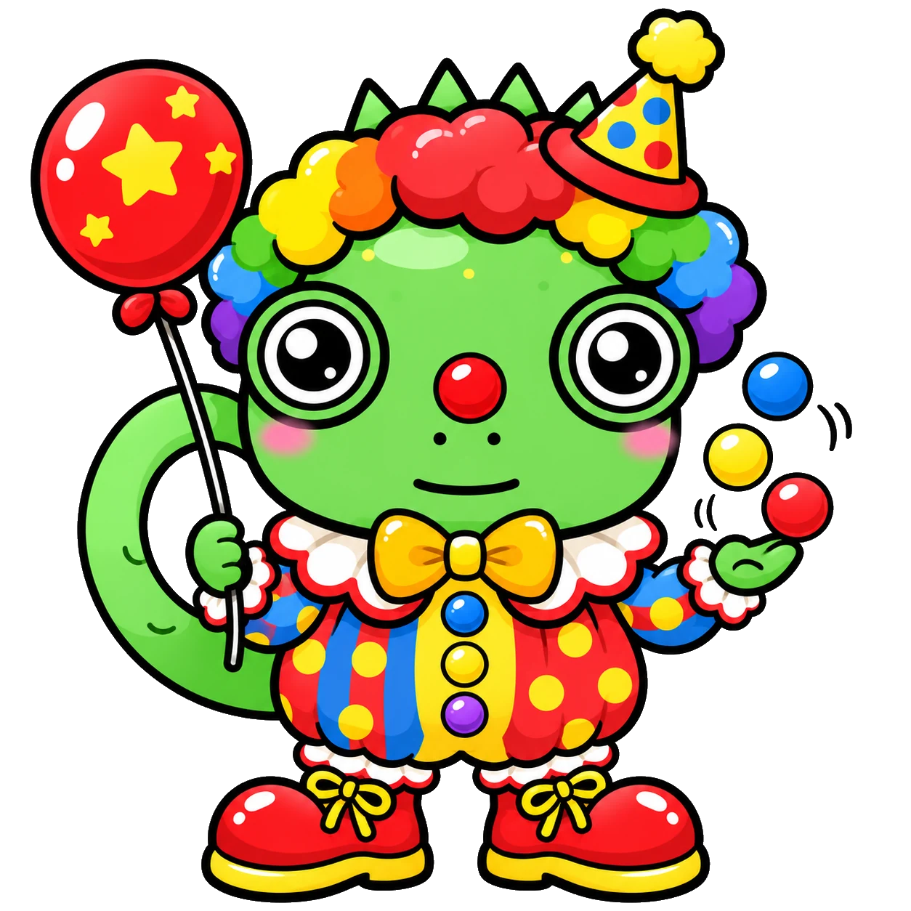

+ FOOD
RECUPERACIÓN ORDINARIA / LABORATORIO DE SONIDOSEscucha.
Escucha.
Descubre.
Dibuja.
Cada pista tiene un audio y un emoji. Escucha la palabra en inglés, escríbela en la casilla con el mismo número de tu tablero y haz un dibujo.
DETECTIVESelecciona tu expedienteCASO --
Elige tu nombre
Abre tu expediente para que el orden de los audios coincida con tu tablero.
TU MISIÓN
20 sonidos, 20 dibujos
Avanza en orden. Puedes repetir cada audio todas las veces que necesites. La palabra escrita solo va en tu tablero de papel.
PISTA 01 / 20AUDIO EN INGLÉS
🥭
¿Qué palabra escuchas?
Toca el botón para escuchar.
En la casilla 01 del tablero: escribe el nombre en inglés y dibuja lo que escuchaste.
¡Buen trabajo, detective!
Revisa que tus veinte casillas tengan una palabra en inglés y un dibujo. Entrega tu tablero al docente.